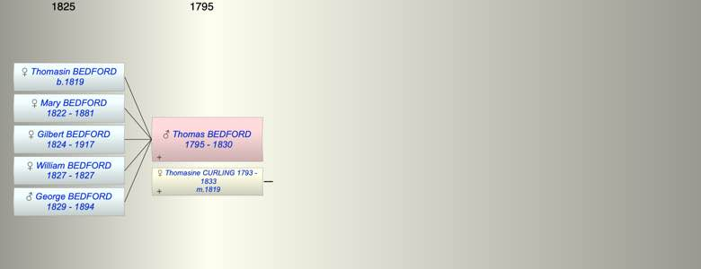

| [Index] |
| Thomas BEDFORD (1795 - 1830) |
|  |
| b. 1795 |
| m. 02 Feb 1819 Thomasine CURLING (1793 - 1833) at St Laurence |
| d. 1830 aged 35 |
| Children (5): |
| Thomasin BEDFORD (1819 - ) |
| Mary BEDFORD (1822 - 1881) |
| Gilbert BEDFORD (1824 - 1917) |
| William BEDFORD (1827 - 1827) |
| George BEDFORD (1829 - 1894) |
| Events in Thomas BEDFORD (1795 - 1830)'s life | |||||
| Date | Age | Event | Place | Notes | Src |
| 1795 | Thomas BEDFORD was born | ||||
| 02 Feb 1819 | 24 | Married Thomasine CURLING (aged 26) | St Laurence | Note 1 | |
| 24 Nov 1819 | 24 | Birth of daughter Thomasin BEDFORD | Southwark | Note 2 | |
| 1822 | 27 | Birth of daughter Mary BEDFORD | St Laurence | Note 3 | |
| 1824 | 29 | Birth of daughter Gilbert BEDFORD | St Laurence | Note 4 | |
| 1827 | 32 | Birth of daughter William BEDFORD | St Laurence | Note 5 | |
| 1827 | 32 | Death of daughter William BEDFORD | |||
| 1829 | 34 | Birth of son George BEDFORD | St Laurence | Note 6 | |
| 1830 | 35 | Thomas BEDFORD died | |||
| Created on a Mac™ using iFamily for Mac™ on 8 Oct 2023 |